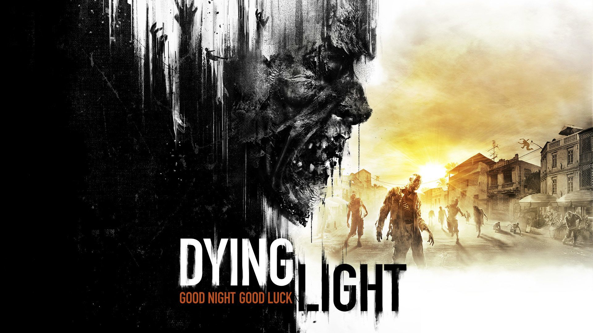

Gry Akcji

Crysis 2
Crysis 2 to pierwszoosobowa strzelanina, w której ponownie przywdziewamy dający nadludzkie możliwości nanokombinezon, by stanąć przeciwko hordom obcych najeźdźców. Stawką w tym starciu jest przyszłość naszej planety. planety. Akcja gry zaczyna się trzy lata po wydarzeniach, których świadkami byliśmy w pierwszej części. Przez ten czas obcy zadbali, by znaczna część naszej planety przeobraziła się w pole bitewne.
Far Cry 3

Far Cry 3 to trzecia odsłona popularnej serii pierwszoosobowych strzelanin, w których przemierzamy otwarty świat i bierzemy udział w zróżnicowanych starciach z grupami inteligentnych przeciwników. Za produkcję odpowiada, podobnie jak w przypadku części drugiej.
Dying Light

Dying Light to gra akcji z otwartym światem, utrzymana w klimatach survival horroru. Wcielamy się w niejakiego Kyle’a Crane’a, trafiając do miasta Harran, wzorowanego na Rio de Janeiro, pełnym charakterystycznych faweli. Ludność metropolii została zainfekowana tajemniczym wirusem, który błyskawicznie zmienił wszystkich w zombie.
Grand Theft Auto V

Grand Theft Auto V – kolejna odsłona kultowej serii gangsterskich gier akcji studia Rockstar North – zabiera nas do świata wzorowanego na Kalifornii. W uniwersum Grand Theft Auto stan nosi nazwę San Andreas i składa się między innymi z miasta Los Santos, które stanowi główne miejsce akcji piątki.
Tom Clancy's Rainbow Six: Siege

W 2011 roku firma Ubisoft zapowiedziała grę Tom Clancy's Rainbow 6: Patriots. Miała to być kolejna odsłona słynnej serii strzelanek, tym razem opowiadająca o walce z organizacją terrorystyczną True Patriots. Lata mijały, a o projekcie powoli zapominano.
Poznaj najlepasze gry według mnie na pc. Wszystkie prawa zastrzeżone ©